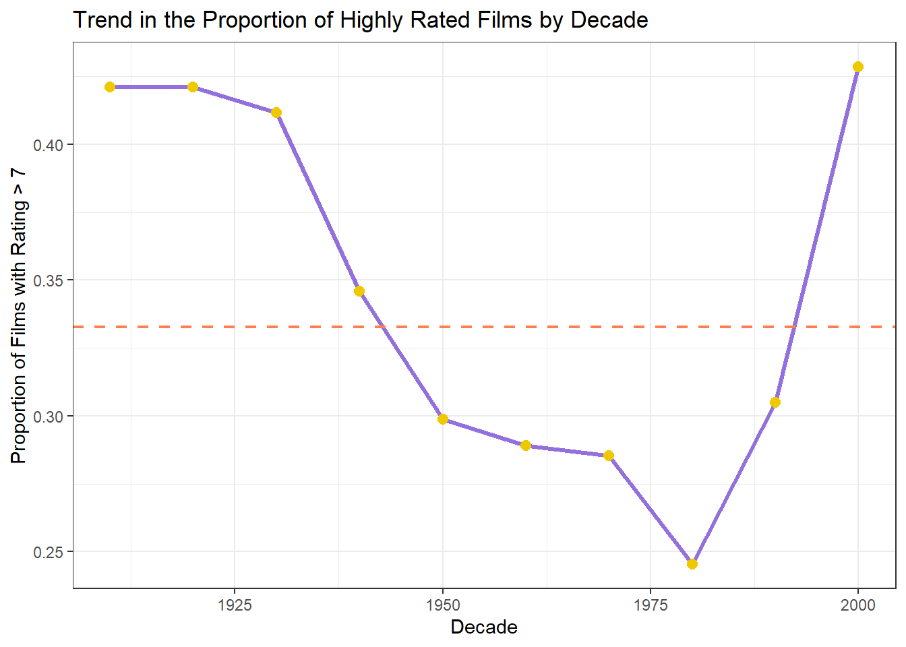
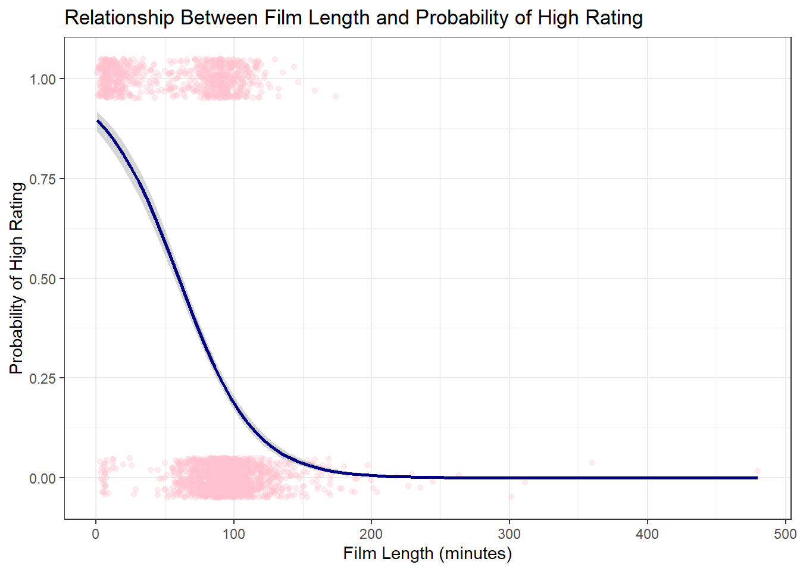
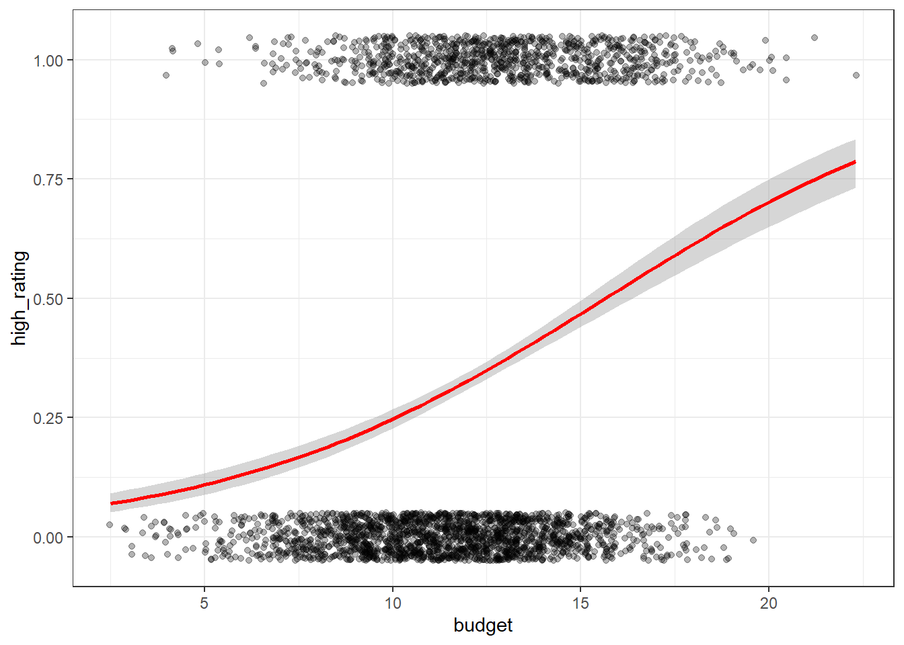
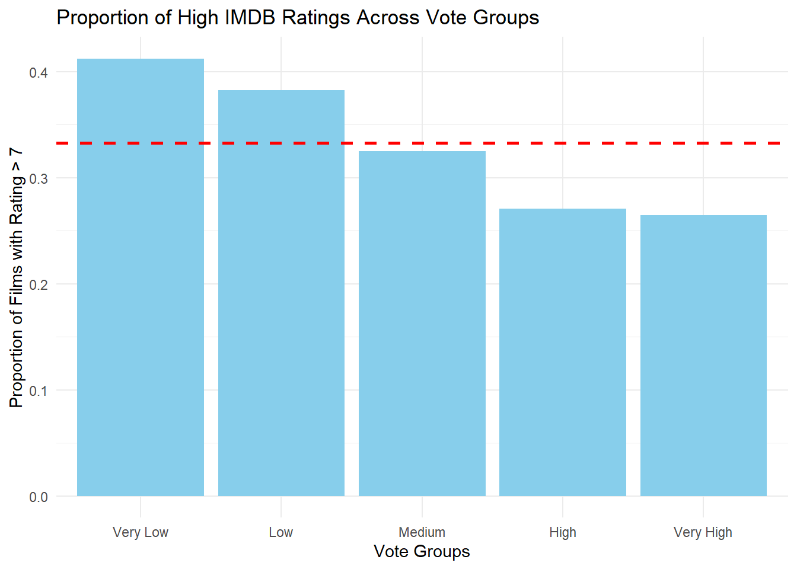
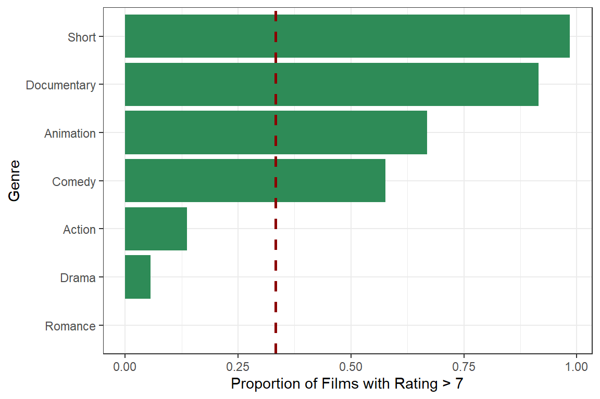
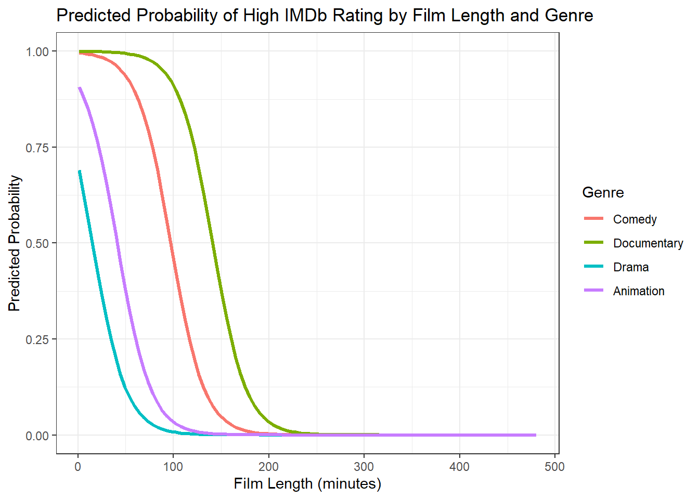

film_id year length budget votes genre rating
1 5993 1943 65 15.5 42 Action 7.6
2 37190 1961 87 12.3 6 Drama 6.0
3 43646 1987 79 16.4 161 Action 7.5
4 28476 1976 NA 12.2 5 Documentary 8.0
5 23975 1982 88 12.5 97 Action 3.5
6 50170 1936 NA 7.0 146 Drama 4.4Group_8_Analysis
Which film properties influence whether a film receives an IMDB rating greater than 7?
1 Research Question
The aim of this analysis is to examine which film characteristics are associated with whether a film receives an IMDb rating greater than 7 or not.
To address this question, a binary response variable is considered, taking the value 1 if a film has an IMDb rating above 7 and 0 otherwise. The analysis focuses on whether release year, film length, production budget, number of votes, and genre are related to the probability of receiving a high rating.
Given that the response variable is binary, the analysis employs logistic regression as part of the Generalised Linear Model framework.
2 The Dataset
The dataset used in this analysis comes from the IMDB film database, which provides a variety of information on films that have been released. The data used here represent a subset of the original database.
2.1 Inspect the dataset
After loading the dataset, the first few observations are displayed to provide an initial overview of the data.
The structure of the dataset is examined to identify the variables and their data types.
Based on the structure output, the dataset contains 2,847 observations and seven variables. The variables include a mixture of integer, numeric, and character types. Specifically, film_id, year, length, and votes are stored as integer variables, while budget and rating are numeric variables. The genre variable is recorded as a character variable representing the film category. It also suggests that some variables (e.g., length) contain missing values (NA).
To further explore the distribution of the variables in the dataset, summary statistics are computed.
| Variable | Min | 1st Qu | Median | Mean | 3rd Qu | Max | Missing |
|---|---|---|---|---|---|---|---|
| film_id | 19.0 | 14159.5 | 29447.0 | 29180.86 | 43982.0 | 58748.0 | 0 |
| year | 1898.0 | 1957.0 | 1982.0 | 1975.75 | 1997.0 | 2005.0 | 0 |
| length | 1.0 | 73.0 | 90.0 | 82.22 | 101.0 | 480.0 | 131 |
| budget | 2.5 | 9.9 | 11.9 | 11.85 | 13.7 | 22.3 | 0 |
| votes | 5.0 | 11.0 | 29.0 | 657.03 | 114.0 | 149494.0 | 0 |
| rating | 0.8 | 3.7 | 4.6 | 5.34 | 7.7 | 9.2 | 0 |
Table Table 1 presents the summary statistics for the numerical variables included in the analysis.
As shown in Table Table 1, the release year of the films spans from 1898 to 2005, suggesting that the dataset covers a long historical period. Film length varies ranging from 1 to 480 minutes. The production budget ranges between 2.5 and 22.3, while the number of votes shows particularly large variation, with a maximum value of 149,494. In contrast, film ratings appear to be relatively concentrated, with values ranging from 0.8 to 9.2. It is also noteworthy that the variable length contains 131 missing observations, whereas the remaining numerical variables do not exhibit missing values.
In addition to the numerical variables, the distribution of film genres is also examined.
| genre | n |
|---|---|
| Action | 872 |
| Drama | 797 |
| Comedy | 684 |
| Animation | 178 |
| Documentary | 154 |
| Short | 131 |
| Romance | 31 |
Table Table 2 reports the number of films in each genre.
Table Table 2 presents the distribution of films across seven genres in the dataset. Action, Drama, and Comedy account for the largest number of observations, whereas genres such as Animation, Documentary, Short, and Romance appear less frequently. This suggests that the dataset is dominated by a few major genres.
2.2 Variable descriptions
In this dataset, each film is represented by several variables describing its main characteristics. Table ?@tbl-var-desc shows the main variables used, including their data types and brief descriptions.
| Variable | Type | Description |
|---|---|---|
| film_id | Integer | The unique identifier for the film |
| year | Integer | Year of release of the film in cinemas |
| length | Numeric | Duration (in minutes) |
| budget | Numeric | Budget for the films production (in $1000000s) |
| votes | Integer | Number of positive votes received by viewers |
| genre | Character | Genre of the film |
| rating | Numeric | IMDB rating from 0-10 |
Table Table 3 shows the variables included in the dataset.
The dataset contains both numerical and categorical variables describing different aspects of each film. These variables will later be used as predictors in the statistical model.
3 Exploratory Analysis
Before fitting the GLM, exploratory analysis was carried out to examine the relationships between the response variable and the candidate predictors. This helps to identify broad patterns in the data and provides preliminary support for variable selection in the modelling stage.
3.1 Release Year and High IMDB Ratings
Release year may influence how films are rated. To explore this, films were grouped by release decade and the proportion of highly rated films (IMDB rating > 7) was calculated for each group.
Very early decades contained only a small number of films, so films released before 1910 were excluded from this plot to provide a more stable comparison across release periods.

Figure Figure 1 shows the proportion of highly rated films across release decades. The dashed horizontal line represents the overall proportion of films with ratings above 7 in the dataset.
The proportion of highly rated films appears to vary across decades. Earlier decades tend to show somewhat higher proportions, while films released between the 1950s and 1980s appear to have relatively lower proportions. However, some early decades contain relatively few films, so these proportions should be interpreted with caution.
3.2 Film Length and IMDB Ratings
Film length may influence audience perception of a movie. To explore this relationship, film length is grouped into five categories using quantile-based cut-offs so that each group contains approximately 20% of the films in the dataset.

Figure Figure 2 shows the proportion of highly rated films across film length groups. The overall proportion of films with ratings above 7 is shown by the dashed horizontal line.
Very short films appear to have a higher proportion of ratings above 7 than the other length groups, while the remaining groups are more similar to one another. This suggests that film length may be associated with high ratings, although the pattern may partly reflect differences in genre composition across length groups.
3.3 Production budget and IMDB Ratings
Film budget may also influence how audiences perceive a movie. To explore this possibility, the distribution of film budgets and their relationship with IMDB ratings were examined.

Figure ?@fig-explo-budget shows the relationship between film production budget and the probability of receiving a high IMDb rating. Each point represents an individual film, and the red curve corresponds to the fitted logistic regression line.
The fitted curve shows a gradual upward trend, suggesting that films with larger budgets may be somewhat more likely to receive high ratings. This suggests that budget may be positively associated with the likelihood of a film receiving a high rating.
3.4 Votes and High IMDB Ratings
The number of votes may reflect a film’s popularity or level of audience engagement. To explore this relationship, films were grouped based on their number of votes and the proportion of highly rated films (IMDB rating > 7) was calculated for each group.
The approximate vote ranges for the five groups are:
Very Low: 5-10 votes
Low: 10-20 votes
Medium: 20-47 votes
High: 47-174 votes
Very High: above 174 votes.

Figure Figure 4 shows the proportion of highly rated films across vote groups. The dashed horizontal line represents the overall proportion of films with ratings above 7 in the dataset.
The proportion of highly rated films appears to vary across vote groups, with lower-vote groups showing slightly higher proportions than higher-vote groups. Although the pattern is not especially strong, it suggests that the relationship between vote count and high ratings may not be straightforward.
3.5 Film Genre and High IMDB Ratings
Film genre may influence how movies are perceived by audiences. Different genres may attract different audiences and may vary in storytelling style, which could affect IMDB ratings.

Figure Figure 5 shows substantial variation in the proportion of highly rated films across genres. Some genres have much higher proportions of films with ratings above 7 than others.
This suggests that genre may be an important predictor of high ratings. However, some genres contain relatively few observations, so the corresponding proportions may be less stable and should be interpreted cautiously.
4 Model Fitting
4.1 Data Preprocessing
4.2 Fitting Full Model
A full logistic regression model was first fitted including the number of votes, film length, release year, production budget, and genre as predictors of whether a film received an IMDb rating above 7.
| Variable | Estimate | Std Error | z value | p value |
|---|---|---|---|---|
| (Intercept) | -23.616 | 5.789 | -4.079 | 0.000 |
| votes | 0.000 | 0.000 | 0.508 | 0.612 |
| length | -0.057 | 0.004 | -16.003 | 0.000 |
| year | 0.010 | 0.003 | 3.429 | 0.001 |
| budget | 0.510 | 0.030 | 16.935 | 0.000 |
| genreAnimation | -0.089 | 0.321 | -0.277 | 0.782 |
| genreComedy | 3.109 | 0.179 | 17.351 | 0.000 |
| genreDocumentary | 5.608 | 0.443 | 12.661 | 0.000 |
| genreDrama | -1.557 | 0.239 | -6.506 | 0.000 |
| genreRomance | -14.604 | 391.708 | -0.037 | 0.970 |
| genreShort | 4.002 | 0.797 | 5.021 | 0.000 |
The logistic regression results are summarised in Table 4. The number of votes is not statistically significant, while film length, release year, production budget, and several genre categories show significant associations with the probability of receiving a high IMDb rating.
4.3 Fitting Reduced Model
Since the number of votes was not statistically significant in the full model, it was removed and a reduced logistic regression model was fitted using the remaining predictors: film length, release year, production budget, and genre.
| Variable | Estimate | Std Error | z value | p value |
|---|---|---|---|---|
| (Intercept) | -23.864 | 5.767 | -4.138 | 0.000 |
| length | -0.057 | 0.004 | -16.077 | 0.000 |
| year | 0.010 | 0.003 | 3.483 | 0.000 |
| budget | 0.510 | 0.030 | 16.933 | 0.000 |
| genreAnimation | -0.079 | 0.320 | -0.246 | 0.806 |
| genreComedy | 3.111 | 0.179 | 17.362 | 0.000 |
| genreDocumentary | 5.605 | 0.442 | 12.673 | 0.000 |
| genreDrama | -1.557 | 0.239 | -6.509 | 0.000 |
| genreRomance | -14.608 | 391.829 | -0.037 | 0.970 |
| genreShort | 4.006 | 0.797 | 5.028 | 0.000 |
The reduced model results are shown in Table 5. Film length, release year, production budget, and several genre categories remain statistically significant predictors of whether a film achieves an IMDb rating above 7.
4.4 Model comparison
4.4.1 Coefficient Comparison Table
To compare the full and reduced models, the estimated coefficients are presented side by side in Table 6.
| Predictor | Full Model | Reduced Model |
|---|---|---|
| (Intercept) | -23.616 | -23.864 |
| votes | 0.000 | NA |
| length | -0.057 | -0.057 |
| year | 0.010 | 0.010 |
| budget | 0.510 | 0.510 |
| genreAnimation | -0.089 | -0.079 |
| genreComedy | 3.109 | 3.111 |
| genreDocumentary | 5.608 | 5.605 |
| genreDrama | -1.557 | -1.557 |
| genreRomance | -14.604 | -14.608 |
| genreShort | 4.002 | 4.006 |
As shown in Table 6, removing the non-significant variable votes does not substantially change the estimated coefficients of the remaining predictors. This suggests that the reduced model provides a more parsimonious specification while maintaining a very similar fit to the data.
4.4.2 Model Fitting Statistics Table
| Model | AIC | Residual_Deviance | DF |
|---|---|---|---|
| Full model | 1478.365 | 1456.365 | 2705 |
| Reduced model | 1476.593 | 1456.593 | 2706 |
The reduced model has a slightly lower AIC than the full model, indicating a slightly better balance between model fit and model complexity.
4.5 Final Model Selection
A full logistic regression model was first fitted including the number of votes, film length, release year, production budget, and genre as predictors of whether a film received an IMDb rating above 7.
The coefficient for the number of votes was not statistically significant in the full model. Therefore, a reduced model excluding the number of votes was fitted.
Model comparison using the likelihood ratio test indicated that removing the number of votes did not significantly worsen the model fit. In addition, the reduced model had a slightly lower AIC (1476.6) compared with the full model (1478.4).
Therefore, the reduced model was selected as the final model.
4.6 Odds Ratio
| Predictor | OR | SE | z | p | CI low | CI high |
|---|---|---|---|---|---|---|
| (Intercept) | 0.000 | 5.789 | -4.079 | 0.000 | 0.000 | 0.000 |
| votes | 1.000 | 0.000 | 0.508 | 0.612 | 1.000 | 1.000 |
| length | 0.945 | 0.004 | -16.003 | 0.000 | 0.938 | 0.951 |
| year | 1.010 | 0.003 | 3.429 | 0.001 | 1.004 | 1.016 |
| budget | 1.666 | 0.030 | 16.935 | 0.000 | 1.572 | 1.770 |
| genreAnimation | 0.915 | 0.321 | -0.277 | 0.782 | 0.485 | 1.711 |
| genreComedy | 22.398 | 0.179 | 17.351 | 0.000 | 15.876 | 32.061 |
| genreDocumentary | 272.494 | 0.443 | 12.661 | 0.000 | 120.025 | 686.293 |
| genreDrama | 0.211 | 0.239 | -6.506 | 0.000 | 0.130 | 0.333 |
| genreRomance | 0.000 | 391.708 | -0.037 | 0.970 | 0.000 | 206.593 |
| genreShort | 54.687 | 0.797 | 5.021 | 0.000 | 14.108 | 369.664 |
Table Table 8 presents the odds ratios from the full logistic regression model. Odds ratios are obtained by exponentiating the estimated coefficients, which makes the effects easier to interpret on the odds scale.
| Predictor | OR | SE | z | p | CI low | CI high |
|---|---|---|---|---|---|---|
| (Intercept) | 0.000 | 5.767 | -4.138 | 0.000 | 0.000 | 0.000 |
| length | 0.945 | 0.004 | -16.077 | 0.000 | 0.938 | 0.951 |
| year | 1.010 | 0.003 | 3.483 | 0.000 | 1.005 | 1.016 |
| budget | 1.665 | 0.030 | 16.933 | 0.000 | 1.572 | 1.769 |
| genreAnimation | 0.924 | 0.320 | -0.246 | 0.806 | 0.491 | 1.725 |
| genreComedy | 22.439 | 0.179 | 17.362 | 0.000 | 15.905 | 32.119 |
| genreDocumentary | 271.756 | 0.442 | 12.673 | 0.000 | 119.805 | 683.371 |
| genreDrama | 0.211 | 0.239 | -6.509 | 0.000 | 0.130 | 0.333 |
| genreRomance | 0.000 | 391.829 | -0.037 | 0.970 | 0.000 | 207.390 |
| genreShort | 54.903 | 0.797 | 5.028 | 0.000 | 14.173 | 370.971 |
Table Table 9 shows the odds ratios from the reduced logistic regression model. These values indicate how the odds of receiving an IMDb rating above 7 change with each predictor, holding the other variables constant.
4.7 Predicted Probabilities
To further illustrate the final logistic regression model, predicted probabilities were calculated using the reduced model. Film length was allowed to vary across its observed range, while release year and production budget were held constant at their mean values.
Predicted probabilities were generated for several selected genres in order to visualise how the probability of receiving an IMDb rating above 7 changes with film length and genre.

Figure Figure 6 shows the predicted probability that a film receives an IMDb rating above 7 across different film lengths for several selected genres.
The predicted probabilities decrease as film length increases, indicating that longer films are generally less likely to receive ratings above 7 according to the fitted model. This pattern is consistent with the negative coefficient of film length observed in the logistic regression results.
Differences between genres are also evident. Documentary films consistently show the highest predicted probability of achieving a high rating across most film lengths, followed by comedy films. In contrast, drama and animation films have noticeably lower predicted probabilities across the range of film lengths considered.
Overall, the figure illustrates how the final logistic regression model combines the effects of film length and genre to predict the probability that a film achieves an IMDb rating above 7, while holding the other predictors constant.
5 Model Limitation
This analysis has several limitations. First, the dataset contains only a limited set of film characteristics, including release year, film length, production budget, number of votes, and genre. Other potentially important factors, such as director, cast, country of production, awards, or marketing exposure, are not included in the dataset. As a result, the model may omit variables that are also related to whether a film receives a high IMDb rating.
Second, missing values in film length were handled by removing incomplete observations. Although this provides a simple and consistent modelling dataset, it reduces the sample size and may introduce bias if the missing values are not completely random.
Third, some genres contain relatively few films compared with the larger categories. This may lead to less stable coefficient estimates for those smaller groups, so the corresponding genre effects should be interpreted with caution.
6 Conclusion
This analysis examined which film characteristics are associated with whether a film receives an IMDb rating greater than 7. Because the response variable was binary, logistic regression was used to model the probability of a film achieving a high rating.
A full model including number of votes, film length, release year, production budget, and genre was first fitted. Since the number of votes was not statistically significant, a reduced model excluding this variable was selected as the final model. The reduced model also showed a slightly lower AIC, indicating a better balance between model fit and model simplicity.
Overall, the results suggest that film length, release year, production budget, and genre are important predictors of whether a film receives an IMDb rating above 7. In particular, longer films were associated with a lower predicted probability of achieving a high rating, while higher production budgets and more recent release years were associated with a greater likelihood of receiving a rating above 7. Clear differences across genres were also observed, with some genres showing consistently higher predicted probabilities than others.
In summary, the final logistic regression model provides a useful way to describe how several film characteristics are related to the probability of receiving a high IMDb rating.